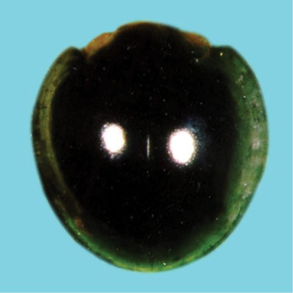

काला शल्क-भक्षी भृंगBlack Scale-eating Ladybird
Chilocorus nigritus · Coccinellidae · INS-0243

- Scientific name वैज्ञानिक नाम
- Chilocorus nigritus (Fabricius, 1798)
- Family कुल
- Coccinellidae
- Hindi हिंदी
- काला शल्क-भक्षी भृंग
- Local names स्थानीय नाम
- black scale-eating ladybird, kala shalk-bhakshi bhrung, chilocorus nigritus, black ladybird beetle
- Status here यहाँ की स्थिति
- native
- Movement आवागमन
- Resident, here all year
- Known from कहाँ दर्ज
- Others have published records from the wider Awadh–Purvanchal plain, none yet from Basti–Ayodhya अवध–पूर्वांचल से दूसरों के प्रकाशित अभिलेख, बस्ती–अयोध्या से अभी नहीं
- IUCN IUCN
- not evaluated
- Review समीक्षा
- not yet reviewed
When to look कब देखें
Present all year. साल भर मौजूद।
Uses and possibilities उपयोग और संभावनाएँ
Drawn from the documented uses in the profile below, where each is labelled traditional, current or a research lead. All uses →
Tell it apart from इनसे अलग पहचानें
काला शल्क-भक्षी भृंग / Black Scale-eating Ladybird
Chilocorus nigritus (Fabricius, 1798) — Coccinellidae
काला शल्क-भक्षी भृंग — बागों के पेड़ों के तनों और टहनियों पर पाया जाने वाला एक छोटा, अत्यंत गोल और चमकदार काला लेडीबर्ड भृंग। इसका आकार किसी चिकने काले मोती या बटन जैसा होता है। यह और इसके कांटेदार बच्चे (लार्वा) नींबू, आम और बांस के पेड़ों पर चिपकने वाले हानिकारक शल्क कीटों (स्केल इंसेक्ट्स) के कड़े कवच को तोड़कर उन्हें खा जाते हैं। यह बागवानों का एक बड़ा रक्षक कीट है।
Quick Identification त्वरित पहचान
| Feature | Description |
|---|---|
| Habit | Highly convex, sub-hemispherical ladybird beetle resembling a shiny black bead |
| Coloration | Brilliant shining jet-black above, completely devoid of spots |
| Head & Venter | Head and ventral body surface warm reddish-brown or orange-testaceous |
| Larva | Dark grey to blackish, densely covered with sharp branched spines (scoli) |
| Diet | Specialized predator of armored scale insects (Diaspididae) and soft scales |
Field tip: Carefully examine the bark and twigs of citrus, mango, or bamboo plants infested with crusty white or brown scales for tiny shining black domed beetles.
हिंदी — कैसे पहचानें: चमकदार जेट-काला गोल-मटोल शरीर, लाल-कत्थई सिर, और पेड़ों पर शल्क कीटों को खुरचकर खाना।
Morphology आकारिकी
Adult description: Sub-hemispherical, strongly convex, nearly circular in dorsal outline, completely glabrous and polished. Head reddish-brown or yellowish-testaceous, partially retracted under the pronotum; antennae very short, eight-segmented with a compact club. Pronotum and elytra uniform shining deep jet-black, completely lacking maculations or spots, with very fine, microscopic punctation.
Venter & Appendages: Underparts, legs, and epipleura warm orange-brown or reddish-testaceous, creating a striking contrast with the glossy black dorsum; tibiae flattened and armed with an external tooth.
Larval morphology: Grub is dark grey, stout, armed with six longitudinal rows of formidable branched spines (scoli) that deter predatory ants.
हिंदी: शरीर आधा गेंद जैसा गोल और बहुत चमकदार काला होता है। नीचे का हिस्सा और सिर नारंगी-कत्थई होता है। इसके लार्वा के शरीर पर कांटेदार बाल होते हैं।
Behaviour & Ecology व्यवहार और पारिस्थितिकी
Chilocorus nigritus is diurnal and arboreal. Adults crawl deliberately along twigs, stems, and leaf veins encrusted with scale insects.
The beetle uses its robust mandibles to pry open the waxy, hardened protective cover (test) of armored scale insects. Once the armor is breached, the beetle consumes the soft, immobile female scale and her eggs beneath. Adults are voracious, devouring dozens of scales daily.
Larvae are also voracious predators, feeding alongside adults. When pupating, the mature larva attaches itself to a twig and splits its larval skin dorsally, retaining the spiny exuviae around the pupa as a protective cage.
हिंदी: यह कीड़ा पेड़ों की टहनियों पर चिपके शल्क कीटों के सख्त खोल को अपने जबड़ों से तोड़कर अंदर के कीड़े और अंडे खा जाता है। इसका बच्चा भी इसी तरह शिकार करता है।
Life Cycle / Phenology जीवन चक्र
| Season / Month | Stage & Activity |
|---|---|
| February–April (Spring) | Adults active on new flushes of citrus and orchard trees |
| May–July (Summer/Monsoon) | High breeding rate; females insert eggs beneath old scale covers |
| August–October | Spiny larvae and adults heavily suppress autumn scale populations |
| November–January (Winter) | Overwintering as active or quiescent adults on sheltered evergreen foliage |
Breeds continuously throughout the year in northern subtropical plains, passing through multiple overlapping generations without mandatory diapause.
हिंदी: यह साल भर बागों में सक्रिय रहता है। मादा पुराने शल्क कीटों के खोल के नीचे अंडे देती है। इसके बच्चे तेजी से बड़े होकर साल भर में कई पीढ़ियां तैयार करते हैं।
Host Plants or Prey आहार
- Primary Prey: Armored scales (Aonidiella aurantii, Aspidiotus destructor), soft scales, and mealybugs.
- Tree Associations: Common on Mango (Mangifera indica), citrus, guava, bamboo, and White Mulberry.
- Non-pest associations: Does not feed on vegetation or fruit tissues; purely entomophagous.
हिंदी: यह नींबू, आम, अमरूद और बांस पर लगने वाले शल्क कीटों को खाता है। यह पौधों के किसी भी भाग को नुकसान नहीं पहुंचाता।
Predators / Natural Enemies शत्रु
- Spiders: Salticid jumping spiders and foliage-dwelling crab spiders attack adults.
- Predatory Invertebrates: Tree-dwelling mantids and reduviid assassin bugs capture adults.
- Parasitoids: Encyrtid wasps parasitize scale-eating ladybird larvae and pupae.
हिंदी: पेड़ों की मकड़ियां और शिकारी मक्खियां इनका शिकार करती हैं। परजीवी ततैये इनके प्यूपा में अंडे दे देती हैं।
Agricultural / Human Relevance कृषि प्रासंगिकता
- World-renowned biological control agent: One of the most famous and successful biological control agents in global citrus and orchard horticulture, intentionally introduced into numerous tropical countries.
- Orchard protection: Prevents devastating scale-induced branch dieback, yellowing, and sooty mold in citrus and mango orchards.
- Conservation in Awadh: Avoiding broad-spectrum organophosphate sprays preserves these beneficial beetles in village fruit orchards.
हिंदी: बागवानी में यह दुनिया भर में मशहूर मित्र कीट है। यह नींबू और आम के बागों को शल्क कीटों की बर्बादी से बचाता है और कीटनाशकों का खर्च बचाता है।
Expected Locally स्थानीय रूप से अपेक्षित
Not a field record. Written from published accounts for eastern Uttar Pradesh. No confirmed local sighting yet — if you have seen it, that is what the atlas needs.
अभी तक स्थानीय पुष्टि नहीं। यह विवरण प्रकाशित स्रोतों से है, किसी अवलोकन से नहीं।
Expected across the fruit orchards, citrus plantations, bamboo groves, and village homestead trees of Basti, Ayodhya, and Sant Kabir Nagar wherever scale insects occur. GBIF holds published records from the wider Awadh–Purvanchal plain, none yet from Basti–Ayodhya. A first local record would be a photograph of an adult or spiny larva preying on scales on tree bark, submitted through the About page.
Distribution वितरण
Global range: Native to South and Southeast Asia; widely introduced across tropical and subtropical regions of Africa, the Pacific, and the Americas for biocontrol.
In India: Widespread across the Indian mainland, the Gangetic plain, Central India, and peninsular orchards (Poorani 2002).
In Uttar Pradesh: Distributed throughout orchard-growing districts across the plains.
In Basti district / eastern UP: Expected in mango belts and village citrus orchards in all blocks.
हिंदी: यह भृंग भारत का मूल निवासी है और इसके गुणों के कारण इसे दुनिया के कई देशों में बागों की रक्षा के लिए ले जाया गया है। उत्तर प्रदेश में यह सामान्य है।
Research Questions शोध प्रश्न
- What is the predation efficiency of Chilocorus nigritus on red scale in Basti citrus orchards? / बस्ती के नींबू के बागों में लाल शल्क कीट पर इस भृंग का क्या नियंत्रण प्रभाव पड़ता है?
- How does winter fog and low temperature affect adult foraging on mango bark? / जाड़ों के कोहरे और ठंड का इसके शिकार करने की रफ्तार पर क्या असर होता है?
- What is the impact of synthetic pyrethroid sprays on adult ladybird survival? / कीटनाशक दवाओं के छिड़काव से इस मित्र कीट की मृत्यु दर कितनी बढ़ती है?
- How do ants guarding scale colonies for honeydew interact with spiny Chilocorus larvae? / शल्क कीटों की रक्षा करने वाली चींटियों से इस कीड़े के कांटेदार बच्चे कैसे बचते हैं?
- Can village fruit growers readily distinguish this glossy black beetle from harmful pests? / क्या स्थानीय किसान इस चमकीले काले भृंग को हानिकारक कीड़ों से अलग पहचान सकते हैं?
Similar Species मिलती-जुलती प्रजातियाँ
| Species | How to tell apart | हिंदी |
|---|---|---|
| Chilocorus circumdatus | Bright reddish-orange with a black outer margin; not solid black | नारंगी-लाल रंग और पंखों पर काला घेरा |
| Cardon's Ladybird (Anegleis cardoni) | Pale creamy-yellow with black M-mark on pronotum and black stripes | हल्का पीला रंग और काली पट्टियां |
| Cryptolaemus montrouzieri | Forewings dark with reddish-orange head and tip; feeds on mealybugs | पंख काले पर सिर और पिछला सिरा नारंगी |
Field rule: A highly convex, sub-hemispherical ladybird beetle of uniform glossy jet-black coloration with a reddish-brown head feeding on scale insects identifies Chilocorus nigritus.
Taxonomy & Classification वर्गीकरण
Original description. Described by Johan Christian Fabricius in 1798 as Coccinella nigrita in Supplementum entomologiae systematicae.
Subspecies. Monotypic across South Asia; recognized without named subspecies partitions.
Family and order placement. Placed in the ladybird family Coccinellidae, subfamily Chilocorinae, tribe Chilocorini, in the order Coleoptera.
IUCN status rationale. Not evaluated on the IUCN Red List; an abundant and commercially significant predator distributed widely across tropical agricultural landscapes.
हिंदी: जोहान क्रिश्चियन फैब्रिकियस ने 1798 में इसका पहला वैज्ञानिक विवरण दिया था। यह कोक्सीनेलिडी कुल का सदस्य है।
Photo Gallery फोटो गैलरी
No photos yet — add field photos to media/species/black_scale_eating_ladybird/ and run node scripts/sync_photos.js.
Photos needed आवश्यक फोटो
- [ ] Adult preying on armored scales on citrus branch (नींबू की डाल पर शल्क कीट खाता भृंग)
- [ ] Spiny larva feeding alongside adult on infested bark (कांटेदार लार्वा का चित्र)
- [ ] Close-up of glossy jet-black dorsal surface (चमकदार काली पीठ का क्लोज-अप)
References संदर्भ
- Fabricius, J.C. (1798). Supplementum entomologiae systematicae. Copenhagen.
- Poorani, J. (2002). An annotated checklist of the Coccinellidae (Coleoptera) of the Indian subregion. Oriental Insects, 36(1), pp. 307–383. doi:10.1080/00305316.2002.10417335
- Booth, R.G., Cox, M.L. & Madge, R.B. (1990). IIE Guides to Insects of Importance to Man: 3. Coleoptera. CAB International, Wallingford.
- Samways, M.J. (1984). Biology and economic value of the scale predator Chilocorus nigritus (F.) (Coccinellidae). Biocontrol News and Information, 5, pp. 91–105.
- Omkar & Pervez, A. (2004). Predaceous coccinellids in India: predator-prey catalogue. Oriental Insects, 38, pp. 27–61.
- GBIF Occurrence Data — Chilocorus nigritus (Fabricius, 1798), India (2025).
Source file: species/fauna/insects/black_scale_eating_ladybird.md